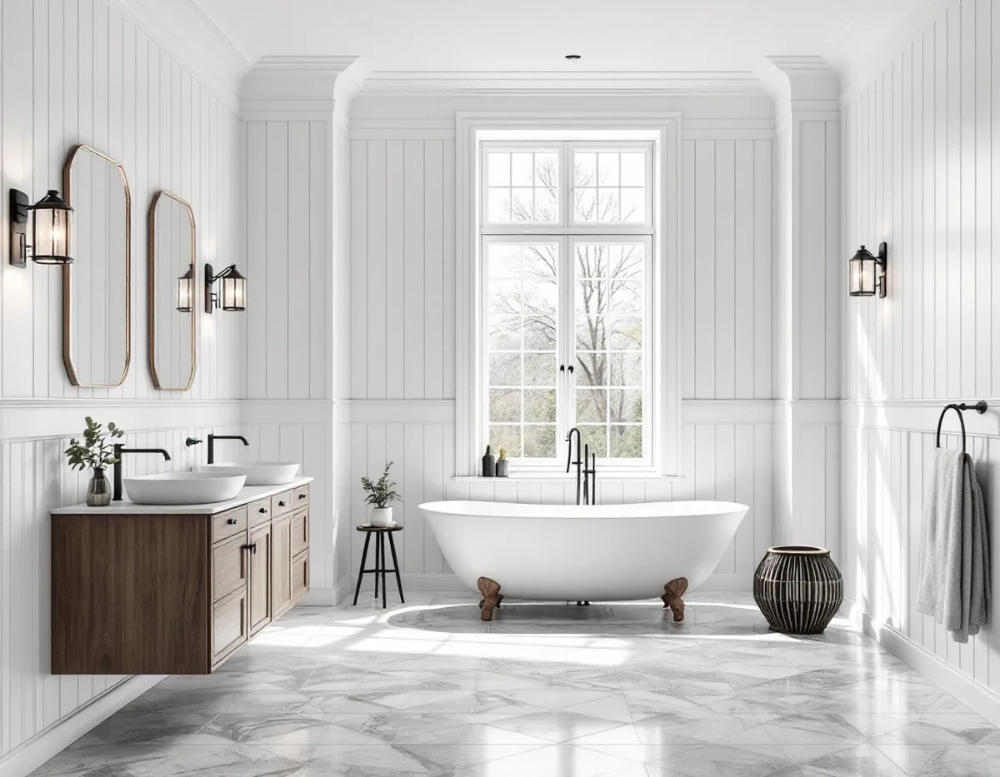
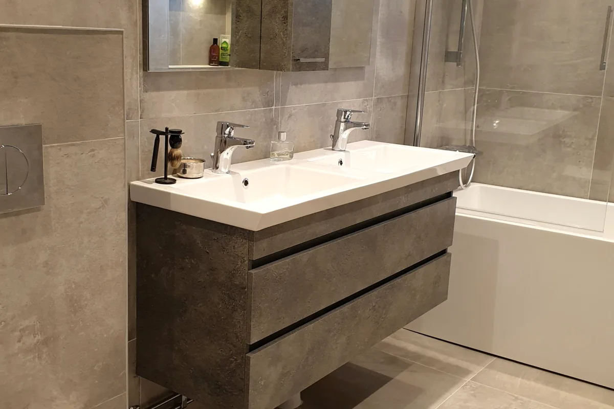

Besök och ritningar
Vi ser badrummet och går igenom de ritningar du fått ut ur arkivet.

En badrumsrenovering i Danderyd gäller ofta en stor äldre villa i Djursholm eller Stocksund, där badrummet byggts om flera gånger och ritningarna kanske ligger i kommunens arkiv.
Beskriv jobbet kort.
Något blev fel. Kontrollera uppgifterna eller ring 08 12 410 276.
Vi tittar på jobbet på plats innan du får offert.
Du ser vad som ingår och vad det kostar.
Vi drar av ROT direkt och sköter ansökan.
Geal Entreprenad AB, Bromma. Org.nr 559303-7566.

Vi river, bygger upp underlag och tätskikt och samordnar VVS och el, med ROT-avdraget på fakturan.
Djursholm grundades 1889 och beskrivs i kommunens översiktsplan som landets första villastad anlagd som förort. Bebyggelsen speglar främst åren 1890–1930, med stora villor på naturtomter. Stocksund växte fram parallellt, och sedan 1987 är Djursholms och Stocksunds villastäder riksintressen för kulturmiljövården. Enebyberg beskrivs i kommunens riktlinjer från 2024 som tydliga årsringar med bebyggelse från 1700-talet till 1970-talet, med utpekade egnahemsområden.
I en villa från den tiden var badrummet ofta litet eller fanns inte alls från början. Det har byggts ut, flyttats eller fått sällskap av fler badrum under årens lopp, och varje omgång kan ha lämnat rör, brunnar och golvlager efter sig. Därför lönar det sig att veta vad som gjorts innan något rivs.
I egnahemsområdena är husen mindre men lika känsliga för förändring. Kommunens riktlinjer säger att byggnadernas ursprungliga arkitektoniska uttryck ska bevaras och vara vägledande vid om- och tillbyggnad. Ska badrummet få ett nytt fönster eller hamna i en tillbyggnad är det alltså husets ursprungliga form som ska styra, inte en standardlösning.
I kommunens ritningsarkiv kan du beställa bygglovsritningar för nästan alla byggnader i Danderyd. Där finns handlingar från tidigare lov och anmälningar, bland annat plan-, sektions- och konstruktionsritningar, teknisk beskrivning och VVA-ritningar. Kommunen påpekar att det inte är säkert att allt finns, men en gammal VVA-ritning kan visa var stammar och avlopp gick när huset byggdes om senast. Du kan också själv söka efter handlingarna kostnadsfritt hos Kontaktcenter Danderyd.
Ska badrummet flyttas eller få nya rör behöver kommunen i en anmälan enligt sin checklista för invändig ändring en VA-ritning med befintliga och tillkommande rör, eller en ventilationsritning som visar systemet och till- och frånluftsflöden. Ett enklare kartutdrag räcker, och för villor behövs ingen situationsplan.
Har villan fått mekanisk ventilation gäller särskilda regler. Enligt kommunens sida om OVK ska ett en- eller tvåbostadshus med FX-, FT- eller FTX-ventilation få en funktionskontroll när systemet installeras, men någon återkommande besiktning krävs inte. Ett nytt aggregat eller en väsentlig ändring av ventilationen kräver dessutom anmälan enligt plan- och byggförordningen.
I badrummet betyder det att frånluftsdonet ska placeras där fukten finns, och att flödet ska stämma med systemet i resten av huset. Byggs badrummet större eller flyttas det kan flödena behöva justeras, och då är det bra att ha ventilationsritningen eller det senaste protokollet till hands.
Kommunen påpekar att det är ägaren som ska se till att kontrollen blir gjord, och att den ska utföras av en certifierad besiktningsman. Planera därför in funktionskontrollen när ett nytt aggregat sätts upp i samband med badrummet, så att den inte glöms bort när hantverkarna har gått.
På sidan om nya regler för bygglov skriver Danderyds kommun att det alltid gäller lovplikt inom kulturhistoriskt värdefulla områden och riksintressen för kulturmiljövården. Ett nytt badrumsfönster, ett ventilationsgaller i fasaden eller en huv på taket kan därför behöva lov, och du kan kontrollera din fastighet i kommunens kulturmiljökarta.
Kommunen påminner också om att den som gör en lovfri åtgärd som ökar bruttoarean ansvarar för att informera kommunens VA-enhet, och att ett komplementbostadshus kan kräva anmälan när vatten, avlopp eller ventilation installeras. Mer om tätskikt och papper finns under badrumsrenovering, och om villornas tak hos takrenovering i Danderyd.
Vi ser badrummet och går igenom de ritningar du fått ut ur arkivet.
Ändras något på utsidan kollar vi kulturmiljökartan; ändras rör eller ventilation tar vi fram underlag.
Ett skriftligt förslag med arbete och material på egna rader.
Gamla golvlager, rör och brunnar tas bort, och stommen bedöms.
Installatörerna drar nytt och justerar frånluften; golv och tätskikt byggs upp.
Kakel, klinker och porslin monteras, och du får egenkontroll och skötselråd.
Rotavdraget är 30 procent av arbetskostnaden. Per person och år får det vara högst 50 000 kronor, och högst 75 000 kronor tillsammans med rutavdrag. Äger ni villan tillsammans har var och en eget utrymme, och vi drar avdraget direkt på fakturan.
Skatteverket godkänner bland annat plattsättning, att dra vatten- och avloppsledningar och att montera toalett, dusch, badkar och handfat i ett småhus. Material och resor ger inget avdrag.
I en äldre villa är det ofta det som döljer sig under golvet som avgör: lager från tidigare renoveringar, rörens skick och hur stommen ser ut. Ventilationen, storleken och ytskikten kommer sedan. Besöket är kostnadsfritt och du får ett skriftligt kostnadsförslag.
Tätskikt, golvbrunn, el, VVS och intyg.
Badrumsrenovering i Stockholm →Takbyte, takbesiktning och plåtarbeten.
Takläggare i Danderyd →Djursholm, Stocksund och Enebyberg.
Takrenovering i Danderyd →Villastäder, lovplikt och strandskydd.
Attefallshus i Danderyd →Tillbyggnad, tomt och kommunens riktlinjer.
Byggföretag i Danderyd →Kalkfärg på puts, linoljefärg på trä.
Fasadmålning i Danderyd →Villastäder, egnahem och grupphus i Danderyd.
Fasadrenovering i Danderyd →Lovplikt, klassning och spröjs i Danderyd.
Fönsterbyte i Danderyd →Varsamt underhåll av villafönster i Djursholm.
Fönsterrenovering i Danderyd →Originalgolv i villor från 1890-talet och framåt.
Golvläggare i Danderyd →Slipa parkett och mönstergolv i villan.
Golvslipning i Danderyd →Rännor, stuprör och beslag i Danderyd.
Plåtslagare i Danderyd →Villastaden, takmaterial och solceller.
Takbyte i Danderyd →Tapet och papptak i äldre villor.
Tapetsering i Danderyd →Funkis, grupphus och 1950-talsvillor.
Tillbyggnad i Danderyd →Riva varsamt, bygga om helt.
Totalrenovering i Danderyd →Eller ring 08 12 410 276, mån–fre 08–17.
Beskriv jobbet kort.
Något blev fel. Kontrollera uppgifterna eller ring 08 12 410 276.